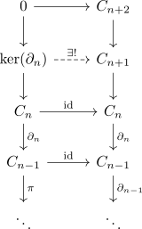
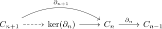

bounded above homology chain complex and quasi isomorphism into a bounded below complex
Proposition
Let $\mathcal{A}$ be an abelian category and $\mathrm{Ch_*}(\mathcal{A})$ be the category of chain complexes Suppose $C_*$ is a chain complex such that the homology chain compelx is bounded above Then there exists a (natural ?) bounded below chain complex

where it is assumed that $H_m(C_*) = 0$ for $m \geq n$
Proof
morphism
this morphism exists by universal property the kernel, as

quasi isomorphism
follows as both $H(\mathrm{ker}) = H_m(0) =& H_m(C_*)$ where each morphism between the zero objects is an isomorphism